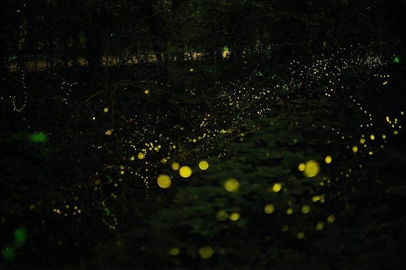
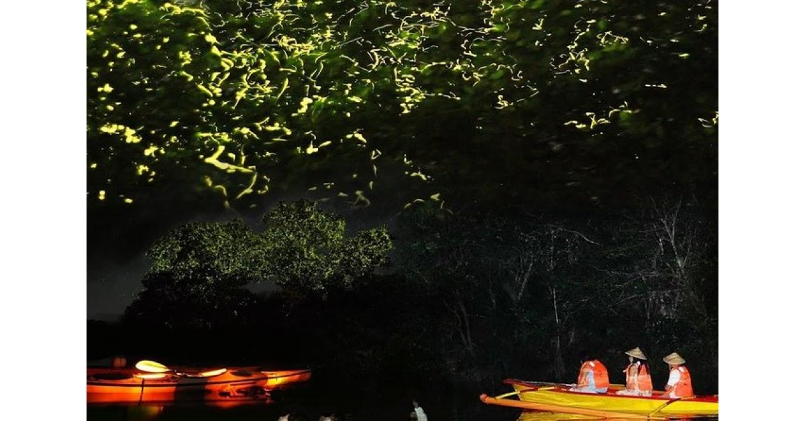

HOME
*Philippines Best Spots*
Welcome to the Pearl of the Orient Seas
The river basin is home to 273 plant species and 67 species of wild animals, as well as 8 species of fireflies, including Pteroptyx macdermotti which is very rare and endemic to the Philippines. The mangrove species Camptostemon philippinense (locally known as Gapas-gapas) is globally endangered and the rarest mangrove species in the Philippines.



Back